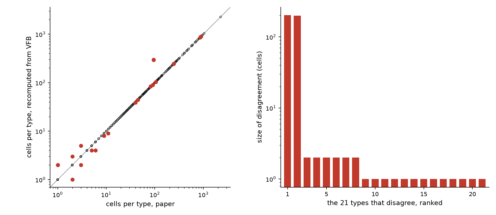

PART 8
把 PART 7 那十條指令實際執行一次：對出來的結果、對不上的三類，以及中途冒出來、到現在還沒解掉的一個矛盾
把它攤開來講，是因為這門課從 PART 1 開始的規矩就是數字要說得出從哪裡來；而「這個數字是不是獨立算出來的」跟「這個數字對不對」同樣重要。下面這張表逐項交代：
| 數字 | 這一輪之前就知道嗎 | 憑據 |
|---|---|---|
| 論文那一側的靶：778 列、732 個型、52,827 顆，以及四個分組的顆數 | 是 | PART 7 發布時就引著 out/nern2025_target.json——那支程式是為了寫指令 1 而寫的 |
| VFB 那一側的神經元總數 53,402 | 是 | 寫十條之前試算過，但沒有存成檔案，所以 PART 7 上看不到它 |
| 兩種比對鍵的命中率 96.8% 與 74.7% | 是 | 同上。指令 5 會寫成「至少做兩種」，正是因為試算時看到這個差距 |
| 逐列比對的 753 ／ 732 ／ 21 | 是 | 同上 |
| 指令 8 換第二條路得到的 60,002 與那個沒解掉的 263（第 5 節） | 否 | 這一輪第一次跑，而且結果出乎意料 |
| 指令 9 那張圖，以及圖上落在對角線的點數 | 否 | 這一輪才畫 |
| 指令 10 的乾淨重跑：18 秒、50 秒、五個輸出檔逐位元組相同 | 否 | 這一輪才做 |
用 bodyId 把 A 類追到底的結果（第 4b、4c 節） | 否 | 這一頁發布之後才做的補查。它推翻了兩個原先靠猜的結論，也把「對不上的三類」收斂成一句話：兩邊差了一個版本 |
表中「是」的四列，出自 out/nern2025_target.json（PART 7 即引用）與本輪重跑的 out/recompute/target.json、out/recompute/vfb.json、out/recompute/compare.json；「否」的三列出自 out/recompute/cross_check.json、out/recompute/figure.json、out/recompute/run_meta.json。皆為 2026-09-14 取得。
論文正文那一句是：
We classified around 53,000 visual system neurons into 732 cell types
只用 VFB 上的資料重算一次，逐型跟論文的補充表對起來，結果是：
四個數字出自 out/recompute/compare.json 的 matched、same_count、different_count、total_cells_delta，由 recompute/recompute.py 於 2026-09-14 產生。
| 算式 | 那個 46 是什麼 | |
|---|---|---|
| 論文的分型數 | 778 − 46 ＝ 732 | 46 個型各佔兩列（一列 _L、一列 _R） |
| 顆數相同的列數 | 778 − (21 ＋ 25) ＝ 732 | 21 列顆數不同 ＋ 25 列 VFB 那側沒有 |
| 論文 | VFB（Nern2024） | |
|---|---|---|
| 神經元 | 52,827 顆（補充表逐列加總） | 53,402 顆 |
| 「型」 | 732 個 cell type，分成 778 列（同一個型可以有左右兩列） | 844 個類別，其中泛稱 23 個、末端類別 821 個 |
| 比對鍵 | 兩種都試過，命中率差 22 個百分點。細節見下面那張表——兩種鍵的分母不一樣，不能直接並排看 | |
論文側出自 out/recompute/target.json；VFB 側的 neurons、classes_all、classes_generic、classes_leaf 出自 out/recompute/vfb.json；兩個命中率出自 out/recompute/compare.json 的 key_choice。2026-09-14。
一列不是一個型，是一個「型＋側別」的實例。778 − 732 ＝ 46，而剛好有 46 個型在表裡佔了兩列——一列 _L、一列 _R，46 個全部成對，沒有例外。686 個型各佔一列，加上 46 個各佔兩列，正好 778。
會這樣，是因為這份連線體重建的是右側視葉。把 732 個型按側別攤開——最右邊那兩欄是型，中間兩欄是列，兩者的換算就寫在表裡：
| 在表裡出現在 | 型數 | 各佔幾列 | 主要是哪一群 |
|---|---|---|---|
只有 _R | 635 | 635 列（全是 _R） | VPN 319、ONIN 146、ONCN 94 ——視葉自己的神經元 |
| 兩側都有 | 46 | 92 列（_R 46 ＋ _L 46） | VPN 33、VCN 6 ——連到中腦的，左右兩顆都伸進右視葉 |
只有 _L | 51 | 51 列（全是 _L） | VCN 44 ——中腦送訊號進視葉的，這裡是左側那顆伸進右視葉 |
| 合計 | 732 個型 | 778 列（_R 681、_L 97） |
最後那一列是這張表的重點。「只有 _R 的型有 635 個」跟「表裡有 681 列 _R」不衝突——差的 46 列，是那 46 個兩側都有的型貢獻的右側那一半。同理 _L：51 ＋ 46 ＝ 97。看起來打架，是因為一個在數型、一個在數列。
ONIN 一個都沒有兩側，這正合定義——視葉內在神經元的突觸不出視葉，所以只有右側那一群進得了這份重建。會出現在左側的全是跨側的那幾類（H1、DNp27、AN09A005、5-HTPMPV03）。
這個分法有一條獨立的旁證。論文正文另外寫了一句：
We identified 104 VCN types across about 270 cells
而補充表裡 VCN 那一群，我們算出來是 104 個型、110 列、270 顆——論文報的是型，表列的是列，兩個單位在同一句話裡同時出現，一個字都不差。
側別的分解出自 out/recompute/target.json 的 sides（rows_per_type、types_by_side、groups_by_side、vcn_check）與 instance_side；正文那句引文出自 out/recompute/paper_quotes.json（全文經 Europe PMC 取得，逐字比對過）。2026-09-14。
VFB 的類別不是一張平表，是一棵有上下位關係的樹。這 844 個類別不在同一層：
distal medullary amacrine neuron Dm15、medulla intrinsic neuron Mi1、lobula columnar neuron LC6。adult visual projection neuron 底下有 367 個、lobula columnar neuron 底下有 41 個），以及橫切的屬性（adult cholinergic neuron 底下有 277 個——那是神經傳導物質，不是形態型）。為什麼非排掉不可。把 844 個全當成型，顆數加總是 59,739，比神經元總數 53,402 多 6,337——因為同一顆被數了不只一次。光是 adult cholinergic neuron 自己就直接掛著 4,069 顆，而那 4,069 顆同時也各自屬於 Mi1、Tm3 之類。「顆數加總超過神經元總數」就是分型規則有問題的警訊，指令 4 第 1 項要 AI 先算的就是這個。
最值得看的是邊界案例。lobula columnar neuron LC10（底下 5 個）、distal medullary amacrine neuron Dm3（底下 2 個）、adult central medulla neuron Cm11（底下 1 個）——這些看起來已經是型了，卻被判成泛稱，因為 VFB 又把它們細分了一層。「什麼算一個細胞型」在這裡沒有客觀答案，而這正是 PART 7 第 3 節那個②號決定的由來。
我們這條規則自己也有一個邊界要講明：判斷「底下有沒有別的類別」時只看這 844 個之內。某個類別在整個 VFB 本體論裡還有下位，但那些下位在這套資料裡一顆神經元都沒有，它在這裡仍算末端。這是我們的選擇，不是資料告訴我們的。
23 個泛稱的完整清單、各自底下有幾個類別、以及各自直接掛了幾顆，出自 out/recompute/vfb.json 的 generic_classes；配對總數 59,739 出自同檔的 instanceof_pairs。2026-09-14。
先講清楚分子分母各是什麼——兩種鍵各自的自然分母不一樣，所以不能把兩個百分比並排就當成可比：
| 拿什麼當鍵 | 分子 | 分母 | 命中率 |
|---|---|---|---|
| 神經元自己的標籤 取括號前那一段（ Dm20_R） | 753 論文的 instance 名在 VFB 的個體標籤裡找得到的 | 778 論文表的 instance 列（帶側別） | 96.8% |
| 類別標籤的最後一個詞 （ Dm15） | 547 論文的 cell type 名在 VFB 的類別標籤裡找得到的 | 732 論文表的 cell type（不帶側別） | 74.7% |
為什麼分母不同：兩種鍵的粒度不同。VFB 的個體標籤帶側別（Dm20_R），只能跟論文的 instance 欄比——那是 778 列；VFB 的類別標籤不帶側別（Dm15），只能跟論文的 cell type 欄比——那是 732 個。換鍵的時候兩邊都得跟著換，不然比的是兩種東西。
要真的並排比，得先放到同一個分母上。把兩種鍵都降到「型」這一層（個體標籤去掉 _L／_R），分母統一用論文的 732 個型：
（711 不是上面那個 753——753 數的是列，711 數的是型；降到型這一層就沒有左右的區分了。）
上表兩個分子分母出自 out/recompute/compare.json 的 key_choice（含 denominator_is 一欄，寫明各自的分母是什麼）；同分母那一組 711／547／732 與 22.4 出自同檔的 key_choice_same_denominator。兩組都由 recompute/recompute.py 於 2026-09-14 產生，執行時也會印在畫面上。
結論不受影響，而且更乾淨：差距就是 22 個百分點。如果只試了後面那一種，你會看到四分之一的型對不上，然後以為是資料本身對不起來。實際上是鍵挑錯了——VFB 的類別標籤是全名（distal medullary amacrine neuron Dm15），而神經元自己的標籤才是論文在用的那種簡寫（Dm15_R）。這正是 PART 2 第 4 節那件事（同一個東西有三個名字）在這裡變成一個百分比。

圖由 recompute/make_figure.py 畫，資料出自 out/recompute/compare.json；圖上的點數存在 out/recompute/figure.json（on_diagonal＝732、off_diagonal＝21、largest＝202）。2026-09-14。
右邊那張圖的形狀，本身就是答案的一部分。差 1 顆、差 2 顆的那十九筆，看起來像是逐顆判定的邊界差異——一顆神經元算不算進這個型，兩邊的判斷偶爾不一樣。而最左邊那兩根，是另外一回事：
| 型 | 論文 | VFB | 差 |
|---|---|---|---|
R7p_R | 95 | 297 | ＋202 |
R8p_R | 95 | 294 | ＋199 |
R7y_R | 244 | 246 | ＋2 |
R8y_R | 245 | 244 | −1 |
R7d_R | 42 | 42 | 0 |
R8d_R | 41 | 41 | 0 |
| 六列合計 | ＋402 | ||
六列出自 out/recompute/compare.json 的 photoreceptor_rows，合計出自同檔的 photoreceptor_delta_total。2026-09-14。
A few cell types are undercounted (estimated 2,777 cells from the lamina and 459 R7 and R8 photoreceptors, see Methods for details).
論文明說 R7／R8 被少算了，估計是 459 顆。我們算出來的差是 402 顆，落在同一個量級。這不是我們算錯，也不是論文算錯——是論文自己標註過的一個已知缺口，而 VFB 那一版把其中一部分補上了。論文的方法段描述了分型的步驟：
Step 3: R7 cells are classified as pale (R7p) or yellow (R7y) using connectivity with Dm8a/b and Tm5a/b and anatomical markers; cells that could not be confidently assigned are labelled as ‘R7_unclear’.
論文有一個 R7_unclear 的標籤，但補充表裡沒有這一列——把補充表裡的每一列都掃過一遍，沒有任何一列的名字帶 unclear。而 VFB 那一側也沒有任何標籤帶 unclear；VFB 的 R7p_R 那 297 顆全部掛在同一個類別 FBbt_02000006（photoreceptor cell R7 of pale ommatidium）底下。
我們一度以為：論文判不出來、標成 R7_unclear 的那些細胞，在 VFB 這一版被歸進了 pale。那只是個猜測，而後來找到了有出處的答案——兩邊差了一個資料集版本，而論文的版本註記明寫 v1.1 調整了個別細胞的分型、幾乎全是 R7 與 R8。見第 4c 節。
兩條引文出自 out/recompute/paper_quotes.json（全文經 Europe PMC 的 fullTextXML 取得，PMC12119369，2026-09-14，逐字比對過）。「補充表裡沒有 unclear」與「VFB 沒有 unclear、297 顆同屬一個類別」出自對 out/recompute/target.json 的搜尋與一次知識庫查詢（recompute/cross_check.py 同一支介面）。
指令 7 要求把對不上的部分列完，不要只給數量。結果是三類：
bodyId，而 VFB 的標籤裡也帶著它（Dm15_R (JRC_OpticLobe:65558)）。改用編號查，18 列當場現身——同一顆神經元，兩邊取了不同的型名。詳見下一節。
AVLP 35 個、PLP 29 個、SLP 14 個、PVLP 12 個、LHAV 11 個、DNg 9 個、DNge 8 個、PS 7 個。抽三個去查，查到的是adult serotonergic PLP neuron 與 adult anterior optic tubercle neuron 050／065 這類東西。判斷：這一類比較像「兩邊收錄的範圍本來就不同」——VFB 的資料集連帶收了一些伸進視葉的中腦神經元，而論文補充表的範圍是視覺系統的型錄。這是推測，我們只查了三個。
三類的筆數與清單出自 out/recompute/compare.json：only_in_paper（25）、only_in_paper_explained_by_split（7）、only_in_paper_unexplained（18）、only_in_vfb（184）、only_in_vfb_cells（221）、only_in_vfb_prefix_top、paper_split_vfb_did_not。2026-09-14。
指令 5 逼我們比較兩種名字當鍵。但 A 類那 25 列告訴我們還有第三種鍵——編號。論文表的 bodyId 欄與 VFB 標籤括號裡那串，是同一份重建的同一個編號。用它再查一次，25 列分成四堆：
| 幾列 | 是什麼 | |
|---|---|---|
| ① 一對一改名 | 10 | 同一顆、顆數也相同，只是名字不同：HST_R→HS4_R、LAL047_R→LoVC8_R、LC35a_R→LoVP15_R、LC35b_R→LoVP104_R、LT85_R→LoVP87_R、V1_L→LPT58_L、mALD1_L→LoVC10_L… |
| ② 側別標到另一邊 | 1 | DNc01_L 在 VFB 併進了 DNc01_R——所以 VFB 那一列是 2 顆而論文是 1 顆。這同時解釋掉第 3 節那 21 筆差異裡的一筆。 |
| ③ 論文拆、VFB 併 | 7 | Li11a＋Li11b→Li11_R（2＋2＝4）、LoVP90a／b／c→LoVP90_R（1＋1＋1＝3）、VST1＋VST2→VT_R（3＋4＝7）。三組的加總都跟 VFB 那一列的顆數完全相等。 |
| ④ VFB 沒有收 | 7 | 共 11 顆。編號在 VFB 的 JRC_OpticLobe 命名空間裡完全不存在：AN09A005（左右各一列）、AN27X013（左右各一列），以及三個名字帶 TBD（待定）的。為什麼沒收，見下一節——原因跟①②③其實是同一個。 |
四堆的分類與完整清單出自 out/recompute/compare.json 的 by_body_id（kinds、absent、n_renamed、cells_absent、only_in_vfb_after），由 recompute/recompute.py 的 resolve_by_body_id() 產生；「只出現在 Berg2025」出自一次知識庫查詢。2026-09-14。
LC39、Li11、LoVP90 三個型被論文拆成 a／b／c」。編號查出來不是這樣：LC39a_R 確實對到 LC39_R，但 LC39b_R 對到的是 LoVP51_R——一個完全不同的名字。字串猜得出形狀，猜不出身分。
LoVP90 應該分成三型，VFB 這一版還記成一型。兩邊都沒錯，只是分型的版本不同。而如果我們只報一個「命中率 96.8%」，這件事就完全看不見了。
上一節把 25 列分成四堆，看起來是四個獨立的現象。其實是同一件事。
optic-lobe:v1.0.1，論文補充表是 optic-lobe:v1.1。?dataset=optic-lobe:v1.1。
論文有一整節叫〈Versions of the dataset〉，開頭就是：
Two releases of the optic lobe dataset are available: the initial release (optic-lobe:v1.0.1) and the current version of the dataset (optic-lobe:v1.1).
那一節還寫了一句可以直接拿來對答案的話：
We also revised some cell-type definitions (5 types were split into a total of 11 new types and 2 types were merged into a single type).
那就把全部 778 列都用 bodyId 對一次，看能不能自己數出「5 個型拆成 11 個」。結果：
| v1.0.1 的型（VFB 這一側） | 在 v1.1 變成（論文那一側） |
|---|---|
VT_R | VST1_R、VST2_R |
Li11_R | Li11a_R、Li11b_R |
LoVP90_R | LoVP90a_R、LoVP90b_R、LoVP90c_R |
LoVP70_R | LoVP51_R、LoVP70_R |
DNc01_R | DNc01_L、DNc01_R |
| 5 個 | 11 個 |
五組的還原出自 out/recompute/compare.json 的 by_body_id.version_gap（splits_recovered、n_v101_types_split、n_v11_types_produced），由 recompute/recompute.py 把 778 列逐列用 bodyId 對到 VFB 那一側算出；論文的五條原句出自 out/recompute/paper_quotes.json（全文經 Europe PMC 取得，逐字比對過）。2026-09-14。
版本這件事站住了，7 列就有解釋了。同一節接著寫：
optic-lobe:v1.1 incorporates updates to the segmentation (mainly some merges of small, previously unconnected parts of reconstructed segments with these neurons); these changes collectively result in a small but detectable increase of reconstruction completeness
v1.1 把原本散落、沒接起來的片段併進了神經元，所以多出一些在 v1.0.1 裡根本還不成形的細胞。那 7 列就是這樣來的——它們在 v1.0.1 沒有編號，因為在 v1.0.1 裡還不是一顆完整的神經元。
一、7 列全部落在同一群。論文把細胞分成 VPN／VCN／ONIN／ONCN／other 五群，而這 7 列全部是 other——778 列裡對不到 v1.0.1 的也就只有這 7 列。other 是什麼？論文說是「中腦與視葉都有突觸、但既不算 VPN 也不算 VCN」的那幾型，也就是身體大半在重建範圍外的神經元——正是最需要「把零散片段接起來」才會成形的那一類。
二、三個 _TBD 是論文自己說的三個。
In three cases, we applied a placeholder name, adding ‘_TBD’, because we anticipate that future central brain data will provide a more appropriate designation.
三、那五個名字在 VFB 另一套資料集裡是完整的。AN09A005、AN27X013、三個 _TBD 在 VFB 都找得到，但只出現在 Berg2025／Berg2025a——Male CNS 全腦連線體，跟視葉這套出自同一份 EM 影像（VFB 的描述寫著 traced from part of the Male CNS EM volume）。AN 是 ascending neuron，從腹神經索上行的。在全 CNS 那一版裡它是完整的；在只切出視葉的這一版裡不是。
adjusted the typing of some individual cells (nearly all of these are R7 and R8 photoreceptors
所以R7p 那 ＋202 與 R8p 的 ＋199，最可能的解釋是版本之間的重新分型，而不是我們先前猜的「R7_unclear 被歸進 pale」。兩種說法指向的其實是同一批細胞（第 3 節那段 Methods 描述的就是 v1.1 的分型流程），但論文的版本註記是有出處的，而我們那個猜測沒有。
bodyId 欄只給「圖裡用的那一顆」，所以我們做的是型層級的對照。被併掉的那一個型在 v1.1 沒有自己的列，也就沒有代表編號可查。這是方法的天花板，不是資料的問題——寫出來，免得下一個人以為驗過了。
指令 8 的要求是：前面每一個關鍵數字都是同一條路算出來的，換一條路再算一次。同一個問題——「資料集 Nern2024 底下有幾顆神經元」——問三條路：
| 路 | 問法 | 回答 |
|---|---|---|
| ① 知識庫 | pdb.virtualflybrain.org 的 Cypher | 53,402 顆 類別 844 個 |
| ② REST | v3-cached.virtualflybrain.org/run_query 的 DatasetImages | 自己報 count＝60,002，實際只翻回 50,000 列，被截斷 |
| ③ MCP | vfb3-mcp.virtualflybrain.org 的 get_term_info | 53,402（與①一致） |
三列出自 out/recompute/cross_check.json，由 recompute/cross_check.py 於 2026-09-14 產生（MCP 伺服器版本 1.11.2）。
但更要緊的是 60,002 跟 53,402 差了六千多。往下追，找到了機制：DatasetImages 是每一個「（個體, 類別）配對」給一列，而一顆神經元可以同時屬於好幾個類別。Dm15_R 就同時是 Dm15 與 adult glutamatergic neuron，所以它在結果裡出現兩次。
知識庫算出來的配對數是 59,739，而 REST 報的是 60,002。還差 263 列，我們查不出來是什麼。
查過但排除掉的一個可能：同一顆神經元對到不只一個模板座標框（那樣也會多出列來）。實際查的結果是每一顆都只對到一個模板，所以（個體, 類別, 模板）三元組的數量跟配對數一樣是 59,739，不是差異的來源。
這一條就停在這裡，不編解釋。照 指令 7 最後那句話——「我寧可你說『這一類我查不出來』」——它現在是一筆明講的未解項，寫在 out/recompute/cross_check.json 的 note 欄裡。
四個配對數出自一次知識庫查詢（與 recompute/cross_check.py 同一支介面，2026-09-14）；instanceof_pairs＝59,739 與未解的 263 存在 out/recompute/cross_check.json。
上面是結論。這一節是過程——每一條實際跑起來的樣子，以及跑完之後我要怎麼改它。
| 指令 | 實跑 | 跑完之後要改的地方 |
|---|---|---|
| 1 拿到論文的靶 | 成功，但第一個下載網址是死的 | 要改。PMC 那條路回 HTTP 200、檔案只有 1.8 KB——是個空殼，不是錯誤。指令裡那句「說明你是從哪個網址拿到的」救了這一條，但不夠：應該再加一句「回報檔案大小，太小就停下來」 |
| 2 選資料集並記下版本 | 成功 | 不用改 |
| 3 取回全部並證明沒被截斷 | 成功，而且警告確實命中 | 不用改。這一條是十條裡回報最高的一句 |
| 4 定義什麼算一個型 | 成功：844 個類別裡有 23 個是泛稱，末端類別 821 個 | 不用改 |
| 5 選比對鍵 | 成功，兩種鍵差 22 個百分點 | 不用改。這一條的設計（逼它做兩種）是十條裡最划算的 |
| 6 逐列比對 | 成功 | 不用改 |
| 7 列出對不上的三類 | 成功，但第 2 項「挑三筆去查」太少 | 要改。B 類有 184 個名字，抽三個查完就下判斷，證據太薄。應該改成「按前綴分組，每一組抽一個」——那樣才看得出 184 個是不是同一回事 |
| 8 換第二條路 | 冒出一個沒解掉的矛盾（第 5 節） | 不用改，但要補一句：「如果兩條路差很多，先確認兩邊數的是不是同一種東西」——這裡就是列數對個數 |
| 9 畫圖並說明 | 成功。落在對角線上的是 732 點，跟指令 6 報的一致 | 不用改。「點數要跟指令 6 對得上」這個檢查是有效的 |
| 10 整理成帶得走的東西 | 成功。乾淨資料夾重跑，五個輸出檔逐位元組相同 | 不用改 |
指令 4 的 844／23／821 出自 out/recompute/vfb.json；指令 9 的 732 出自 out/recompute/figure.json；指令 10 的重跑結果出自 out/recompute/run_meta.json。指令 1 那個 1.8 KB 的空殼是 scripts/paper_target.py 的註解裡記著的實測結果。2026-09-14。
照指令 10整理出來的，是三支程式加一份說明：
取論文的靶、取 VFB 那一側、逐列比對。所有自己決定的參數集中在開頭的 PARAMS
同一個數字問三條路，把不一樣的地方攤開
行數出自 out/recompute/run_meta.json 的 files（2026-09-14 實測）。
從一個空資料夾重跑過了：解壓縮、刪掉 out/、只裝 openpyxl 與 matplotlib，主流程加產圖 18 秒、旁證 50 秒，五個輸出檔跟原本的逐位元組相同（唯一不同的是記錄抓取時間的那個文字檔）。
out/target.json、out/vfb.json、out/compare.json、out/cross_check.json 其中一支。不想跑程式也可以直接讀那幾個檔案。
v1.0.1、論文表是 v1.1。改名、拆型、以及那 7 列，全寫在論文自己的〈Versions of the dataset〉裡。剩下的只有一句：我們沒有 v1.1 的存取權，所以「那 11 顆是 v1.1 併出來的」是推論不是查證。R7p 那多出來的 200 顆是不是論文的 R7_unclear。R7_unclear 的猜測就此作廢——它沒有出處，版本註記有。四條裡的每一個數字，前面都已經出過一次：60,002、59,739、263 出自 out/recompute/cross_check.json（第 5 節），18 與 184 出自 out/recompute/compare.json（第 4 節），R7p 那 200 顆的原始兩列在 第 3 節的表裡（297 − 95）。2026-09-14。
下一部分把這三支程式讀完。PART 9 不教 Python 語法——它問的是另一組問題：哪幾行是「自己決定的」、哪幾行換一個人寫會不一樣、以及如果這份程式是別人交給你的，你要先看哪裡。
Nern2024，數字於 2026-09-14 取得